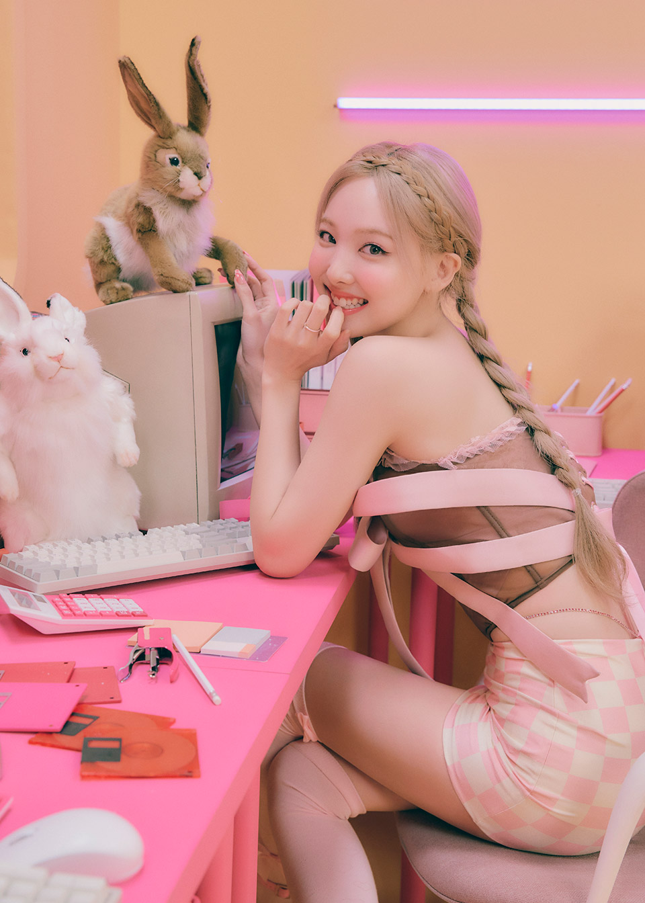

Im Na-Yeon (Hangul: 임나연) was born on September 22, 1995, in Seoul, South Korea. She is the oldest member, lead vocalist, and face of the girl group TWICE.
Nayeon secretly tried out and passed JYP Entertainment's 7th Open Audition and became a trainee on September 15, 2010. Prior to Sixteen and her debut as a member of TWICE, she appeared in a few television advertisements and in several music videos of her label mates, including Jun. K's "No Love", Got7's "Girls Girls Girls" and miss A's "Only You".
Nayeon debuted as a member of TWICE on October 20, 2015, with the release of their debut EP The Story Begins. Nayeon made her solo debut on June 24, 2022 with her first mini album "IM NAYEON" with the tittle track "POP!"